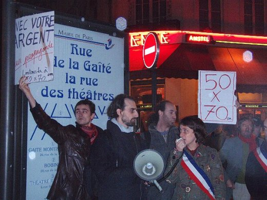

| |
Site dédié à la publication d'informations communiquées par le Collectif des déboulonneurs. En aucun cas ce site n'appelle à des actions illégales. | |
 |
||
|
Accueil du site > Paris > Compte rendu de l’action du 24 novembre 2006 à Paris
Le vendredi 24 novembre 2006 au soir, à Paris, il fait particulièrement doux pour la saison. Aussi la bruine intermittente n’empêche-t-elle pas les cafés et restaurants du boulevard Edgar-Quinet, à deux pas de la gare Montparnasse, de regorger de clients. À 19 h 30 précises, une soixantaine de personnes – sympathisants, photographes, journalistes (Agence France-Presse…) –, alertées par l’annonce diffusée publiquement depuis quelques semaines, se retrouvent à la sortie du métro Edgar-Quinet, au milieu du boulevard. Une demi-dizaine de véhicules de police sont à proximité, mais les agents restent relativement discrets, d’autant qu’ils avouent savoir ce qui va se passer et ne pas s’en formaliser plus que cela. On gagne l’angle, tout proche, de la rue de la Gaîté pour écouter d’abord quelques prises de parole. Des membres du Collectif des déboulonneurs accueillent le public, rappellent les consignes de non-violence (notamment respecter la police, qui est là pour faire son travail) et évoquent le procès qui doit avoir lieu à Paris le 12 janvier 2007, à la suite de l’action du mois précédent. Deux élus Verts ceignent leur écharpe tricolore avant de discourir à l’aide du porte-voix : Charlotte Nenner, adjointe au maire du 10e arrondissement, et chef de file de la lutte antipublicitaire au Conseil de Paris, puis René Dutrey, premier adjoint au maire du 14e arrondissement (où l’on se trouve alors), par ailleurs président du groupe Vert au Conseil de Paris. 
Peu avant 20 heures, la petite foule s’engage dans la rue de la Gaîté jusqu’à la hauteur de l’impasse du même nom, où se trouve la cible du jour : deux panneaux déroulants de l’afficheur-pollueur Avenir (groupe JCDecaux). Quatre barbouilleurs, munis d’escabeaux et d’aérosols de peinture, se mettent aussitôt à la tâche (à la tache…). Des slogans explicites viennent se superposer joyeusement à la triste propagande publicitaire : « Limitons la pub !… Pub = virus mental… On veut de l’art… Anesthésie mentale… Liberté de réception ». Sans oublier « 50 x 70 cm », allusion à la revendication principale du collectif : réduire la taille de toutes les affiches publicitaires à ce format maximal. Pendant que les immondes panneaux se voient enjolivés et neutralisés à la fois, les sympathisants, dont le nombre, grossi par les passants, dépasse maintenant quatre-vingts, chantent « Le Barbouilleur » (adaptation du « Déserteur » de Boris Vian). Dans une ambiance parfaitement bon enfant, les quatre activistes redescendent de leurs escabeaux, brandissent leur carte d’identité en signe de collaboration non-violente avec la police et se laissent ramener par celle-ci, sous les applaudissements de la foule, en direction des fourgonnettes stationnées sur le boulevard. Pendant qu’ils sont emmenés au commissariat voisin de l’avenue du Maine, le rassemblement se poursuit, toujours devant l’impasse de la Gaîté, par d’ultimes prises de parole, ainsi que par la lecture d’une diatribe antipublicitaire extraite d’Allez-y, vous n’en reviendrez pas, un livre de Philippe Val, directeur de Charlie-Hebdo (journal historiquement antipublicitaire, mais qui aujourd’hui censure l’action des déboulonneurs). Quelques membres et sympathisants du Collectif se rendent ensuite dans un café à l’angle du boulevard, en attendant que les quatre interpellés les y rejoignent, une fois libérés, peu avant 22 heures. Date et heure de la prochaine action à Paris : le samedi 23 décembre, à 11 heures très précises. Soutien financier pour les procès : chèque à l’ordre du Collectif des déboulonneurs, 24 rue Louis Blanc, 75010 Paris (Indiquer "procès" au dos du chèque). |
|
Site utilisant SPIP - Hébergement Ouvaton
|